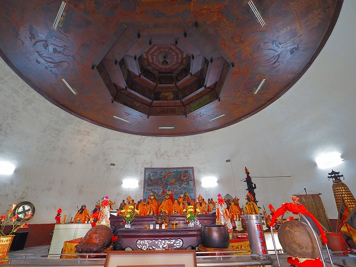
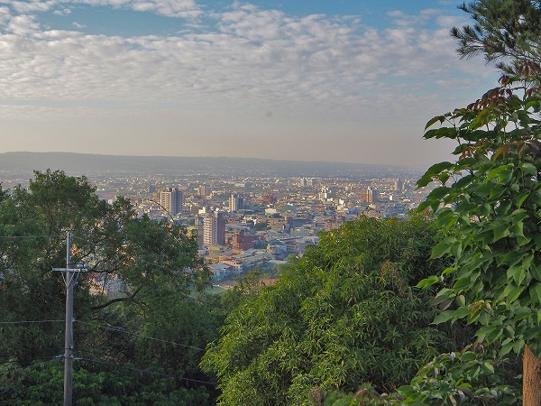

慈徳宮
台湾の珍寺巡り、続いては台中市から20キロ程南に位置する南投県の草屯という小さな街に行く。
とある道教寺院に不思議な建物があるという情報をキャッチしていたのだ。
寺院の名は慈徳宮。
街外れの山の上にある。
クネクネとした山道を登りきると山門が出迎えてくれる。
階段を上り、門を潜ると右手には１９匹の龍が巻き付いた巨大な柱が立っている。
十九龍柱と呼ばれ、高さは３０メートルあるという。この街のシンボル的存在だ。
しかしそんな街のシンボルすら一気に霞んでしまう程インパクトが強烈な建物がその先に控えているのだ。
ヒョウタンのような建物に竹笠のような拝殿が合体している。
何だこれは？こんな奇妙な建物見たことないぞ。
しかも外壁がうにゃうにゃとした装飾に覆われていて建物全体がうごめいているようにすら思えてくる。
正面以外にも左右に入口があり中に入れるようだ。
建物の中へ入るのは後回しにして、とりあえずこの奇妙な建物の全容を掴むことが先決だ。
まずはお参りをする前にぐるりと周りを見てみることにしよう。
正面の笠のような拝殿は4本の柱によって支えられている。
その柱にはカラフルな龍が巻き付いており、先ほど見た十九龍柱を彷彿とさせる。
そしてひょうたん型の建物の右側へ。
外壁はたくさんの龍で覆われている。
雲の隙間から出たり入ったりしている龍の姿は数が多すぎてチョット不気味ですらある。
さらに追い打ちをかけるように色使いが派手で、しかも色数が多い。
過剰にして過激。
まさに珍寺のお手本のようなお堂なのである。
お堂の裏手は斜面になっていて、そこに龍や神仏の像が並んでいる。
さらに斜面を登ると大きな木があり、神木だという。
斜面を下ると今度は建物の左側が見えてくる。
建物の一番後ろの部分には巨大な花が前を向いて花を広げている。
蓮の花なのだが、花弁がピンクと黄色に塗られていて悪い夢に出てきそう。
おしべやめしべまでキッチリ作り込んでいるあたりにある種の狂気を感じる。
これだけあり得ない、荒唐無稽な建物なのに、細部のリアル具合にはやけにこだわるというアンバランスさが堪らない。
そう、珍スポットとは狂気の発露なのだ。
それは狂人が作った、という意味ではない。
作った人の熱意が強すぎるため重点を置くポイントがバランスを欠き、あらぬ方向に突き進んでいくときに出現する現象。
それが珍寺、珍スポットなのだ。
建物の左側は右側とは様子が違う。
何かムカデのようなものがウニョウニョとのたうち回っているように見える。
ムカデとかゴカイとかが苦手な私としては一瞬ゾクッとしたのだが、よく見たらそれらはみな鳳凰の尻尾のヒラヒラしている部分だったのだ。
つまり左右で龍と鳳凰が乱舞する世界をこの建物は表現しているのだ。
一周して何となくこの建物の規模と構成が判ったので、改めて参拝する。
正面の笠形の拝殿の奥には前殿がある。丁度ヒョウタンの小さい方の球体の部分だ。
その奥には後殿が見えるが、中に入るのには一旦建物の脇にまわり込み、ヒョウタンの脇から飛び出している黄色い入り口から入るようになっている。
後殿はヒョウタンの大きな球体の部分にあたる。
混沌の極みのような外壁に比べると内部は至ってシンプルだ。

正面には30体ほどの神像が並び、後には龍が描かれている。
天井はもちろんドーム状になっていて、そこに円と八角形を組み合わせた、
如何にも意味ありげな装飾が為されていた。
手前には石の玉が飾られている。
これは龍が持つ珠で、これに触ると幸せになって金運が良くなるとか。
とりあえず触っておきました。
という訳でこれにて参拝終了。
境内からは草屯の街がよく見える。

拝殿にいたお寺のおじさんに話を聞くと、このお堂は神様が夢に現れてこういう建物を造れ、と指示したのだとか。
うむ～。
神様、なんでこんな建物を造れと言ったのですか？
神様の頭の中がさっぱり判らない。
神様の誤発注？と思ったがきっと下々には想像もつかない深～い意味があるに違いない。
次の珍寺にGO！
台湾大佛列伝6に戻る